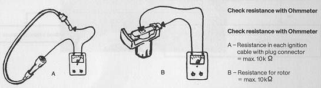

Test conditions:
- Correct starting procedure
- Selector lever or gearshift lever in neutral.
- Do not press accelerator pedal.
This holds true for a cold engine and an engine at operating temperature
no matter what the outside temperature is.
- Switch on ignition and start engine.
- At outside temperatures below 0° C (32° F) press clutch pedal
before starting.
- Fuel in tank
- Engine must be cold at start of test.
- Starter speed normal (battery voltage)
Trouble in the ignition system
- Check distributor cap for:
dampness, dirt, tracks, cracking, and also condition of carbon brush.
- Check contact breaker points for pitting and gap.
- Check ignition coil for cracks, tracking, and loose connections.
- Check high tension cables and connectors for dampness, dirt, and good contact.
- Check rotor with ohmmeter for continuity

Voltage at coil terminal 15 is too low.
- Install additional wire from terminal 1 to ground.
- Measure volatge at terminal 15 with volt meter while operating starter.

Voltage is 9 volts or more
Voltage is less than 9 volts